COLLECT众包测试平台
软工三项目答辩
191250016 陈梓俊
191250031 冯国豪
191250093 刘庭烽
191250190 张潮越
产品的用户体验地图
故事一
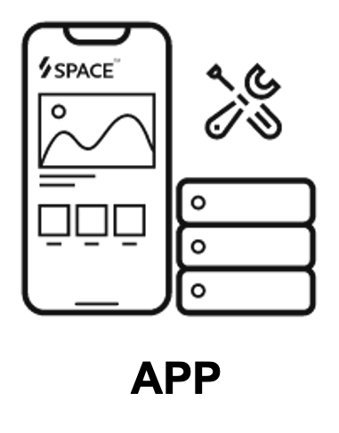
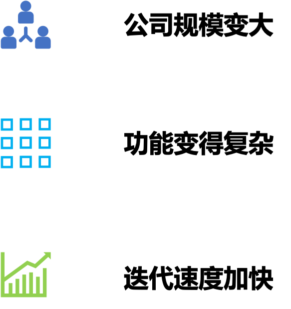
COLLECT
新建任务
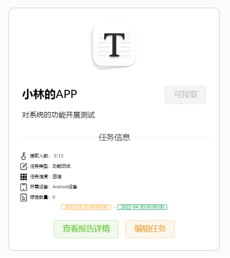
任务名称
任务人数
任务简介
起止时间
...
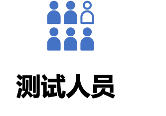 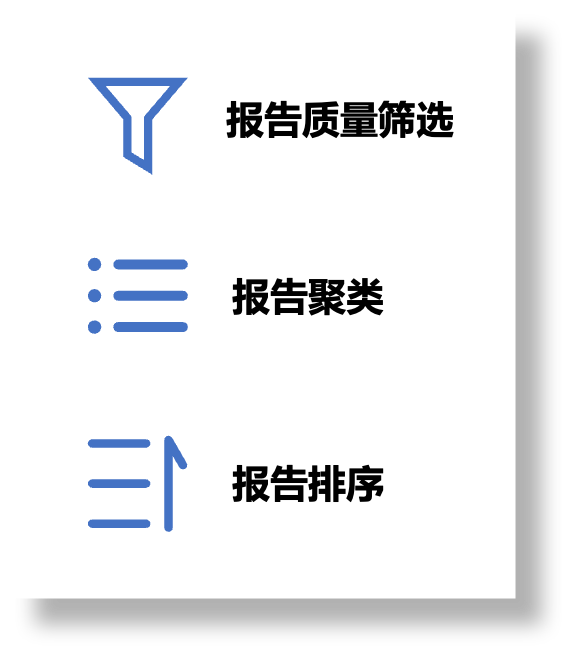
故事二
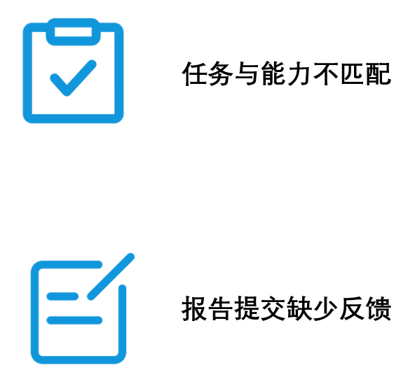
COLLECT
COLLECT
总体及算法设计思路
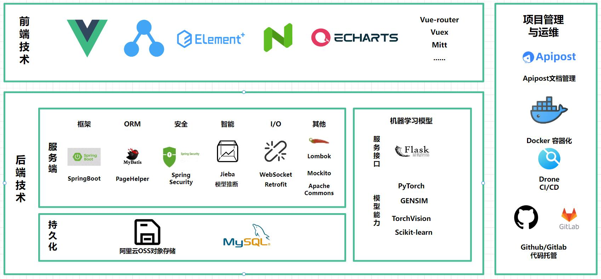
众包工人 发包方
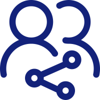
报告协作
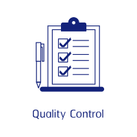
报告质量筛选
报告聚类
报告排序
报告协作
报告质量筛选
报告质量筛选
测试报告完整性
报告相关性
众包工人评议
报告协作指数
测试工人资历
报告聚类
报告聚类
文本相似度：词嵌入+余弦相似度
图片相似度：使用MobileNet模型进行特征提取并计算
聚类：基于报告质量评分，使用系统性聚类算法
报告排序
前端设计亮点
卡片设计
突出交互焦点
浏览层次
后端设计亮点
安全过滤
安全过滤
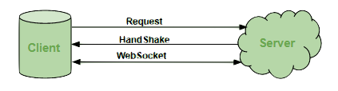
socket通信
安全过滤
socket通信
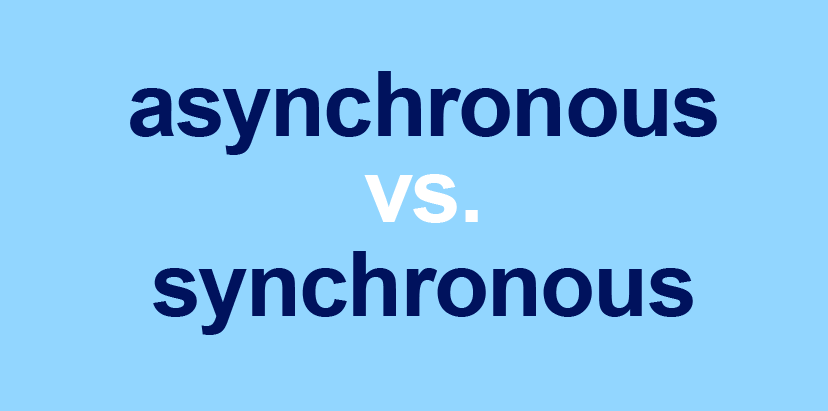
同步通信，异步更新
End.